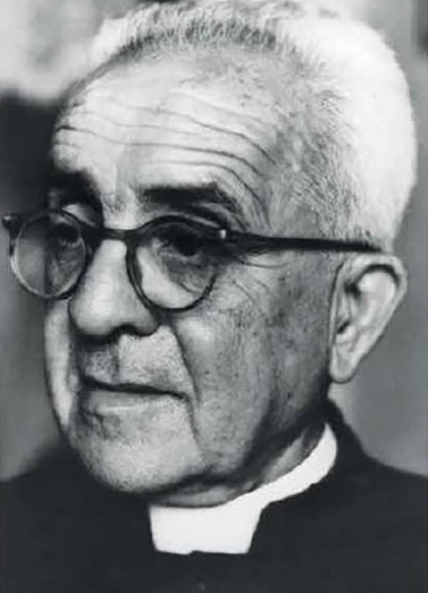
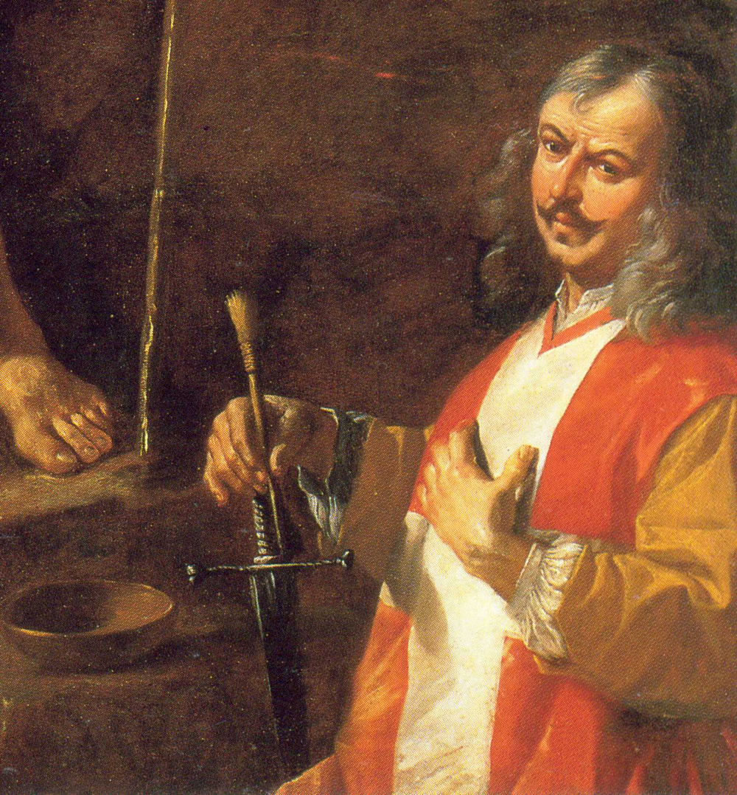

Pietru Pawl Saydon

Pietru Pawl Saydon (24 July 1895 - 22 March 1971), was a Roman Catholic priest and scholar of the Maltese
language, other semitic languages and the Bible. He was President of the Maltese Language Society (Għaqda
tal-Malti) at the University of Malta. He is most noteworthy for his contributions to the Maltese language,
and the translation of the Bible from the original Hebrew to Maltese.
Early years
Saydon was born on 24 July 1895, in Żurrieq. He went to the local primary school, before enrolling in the
national Seminary. In 1912 he took a preparatory course in Literature at the University of Malta, and qualified
with B.Litt. at the age of 20. in 1919, he qualified with a degree in Canonical Law, and a subsequent Doctorate
in Theology. Having come top of class, he was granted a Governmental scholarship to be able to continue his
studies abroad. In 1919 he was also ordained as a priest, and the following year left for the Pontifical Biblical
Institute in Rome, where he obtained a Licence in Holy Scriptures in 1923.
Mattia Preti
Born in the small town of Taverna in Calabria, Preti was called Il Cavalier Calabrese (the Calabrian Knight)
after appointment as a Knight of the Order of St. John (Knights of Malta) in 1660. His early apprenticeship
is said to have been with the "Caravaggist" Giovanni Battista Caracciolo, which may account for his lifelong
interest in the style of Caravaggio.
Probably before 1630, Preti joined his brother Gregorio (also a painter), in Rome, where he became familiar with
the techniques of Caravaggio and his school as well as with the work of Guercino, Rubens, Guido Reni, and
Giovanni Lanfranco. In Rome, he painted fresco cycles in the churches of Sant'Andrea della Valle and San Carlo
ai Catinari. Between 1644 and 1646, he may have spent time in Venice, but remained based in Rome until 1653,
returning later in 1660-61. He painted frescoes for the church of San Biagio at Modena (app. 1651-2) and
participated in the fresco decoration of the Palazzo Pamphilj in Valmontone (documented 1660-61), where he
worked along with Pier Francesco Mola, Gaspar Dughet, Francesco Cozza, Giovanni Battista Tassi (il Cortonese),
and Guglielmo Cortese.
The residence in Triq il-Fjuri in Żurrieq was once owned by the great painter Mattia Preti (1613-1699). He had
spent the last 40 years of his life in Malta - first staying in Valletta and later on moving to this house from
where a number of great works of art were made.
